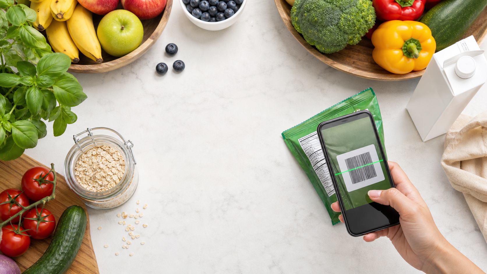

Leite e lactose
Procure leite, lactose, caseina, soro de leite, creme, manteiga e derivados.
Rotulos, alergias e orientacao nutricional
Pesquise por nome, digite o codigo de barras ou use a camera para ver tabela nutricional, ingredientes, alergicos e uma leitura rapida para o seu perfil.

Resultado
Camera
Camera inativa
IA
Guia rapido
Procure leite, lactose, caseina, soro de leite, creme, manteiga e derivados.
Fique atento a trigo, cevada, centeio, malte e contaminacao cruzada.
Verifique pasta, oleo, farinha, extrato, mix de nuts e linhas compartilhadas.
Ingredientes como lecitina, albumina, clara, gema e proteina vegetal podem aparecer em ultraprocessados.